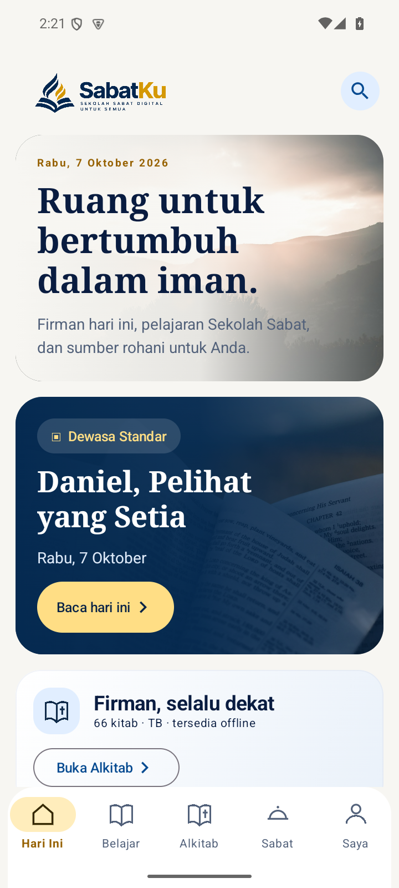
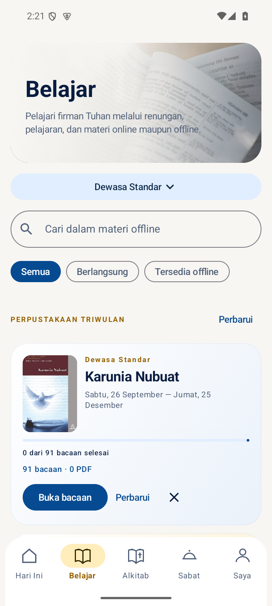
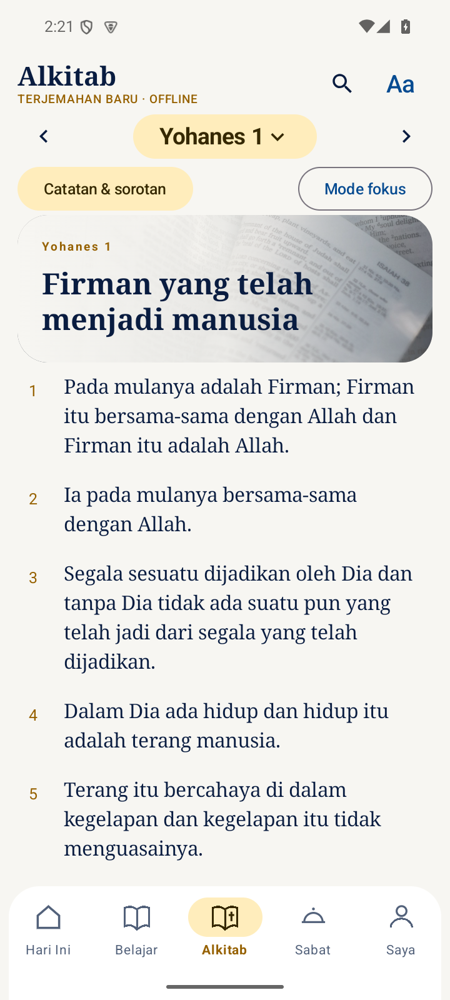

01
Alkitab yang ikut ke mana saja
Baca Alkitab Terjemahan Baru atau King James Version. Unduhannya tersimpan di perangkat agar tetap bisa dibaca tanpa internet.
TBKJVOffline
Teman bertumbuh setiap hari
Belajar Sekolah Sabat, membaca Alkitab, dan menyambut Sabat—semua dalam satu aplikasi yang nyaman dibawa ke mana saja.
Beta untuk tester · versi 0.1.0-beta07 · Android 8.0 ke atas
APK uji coba ini belum tersedia di Google Play Store dan dipasang sebagai aplikasi terpisah dari versi Play Store.

SATU TEMPAT UNTUK BERTUMBUH
SabatKu merangkum kebiasaan belajar dan membaca Firman dalam pengalaman yang sederhana.
Baca Alkitab Terjemahan Baru atau King James Version. Unduhannya tersimpan di perangkat agar tetap bisa dibaca tanpa internet.
Temukan bacaan harian dan berbagai program pelajaran dalam satu perpustakaan. Lanjutkan bacaan saat Anda siap.
Tandai ayat, beri sorotan, dan tulis catatan pribadi untuk membantu mengingat hal yang Anda pelajari.
Lihat waktu mulai dan berakhirnya Sabat berdasarkan lokasi yang Anda pilih, lalu atur pengingat sesuai kebutuhan.
PENGALAMAN YANG TENANG
Tampilan bersih, bacaan yang nyaman, dan alat belajar yang membantu Anda fokus pada hal yang penting.
Kenali perjalanan SabatKu

DIBUAT UNTUK MENEMANI
Buka bacaan hari ini, simpan pemikiran Anda, dan bangun kebiasaan rohani langkah demi langkah.
BANTU SABATKU HADIR DI GOOGLE PLAY STORE
Supaya SabatKu bisa diterbitkan di Google Play Store dan lebih mudah dicari serta diunduh, pengembang perlu mendaftarkan akun developer Google Play. Google mengenakan biaya pendaftaran satu kali sebesar US$25, sekitar Rp447.000 berdasarkan kurs acuan 9 Oktober 2026. Nilai rupiah dapat berubah mengikuti kurs bank atau kartu.
Jika Anda tergerak untuk membantu, donasi berapa pun berarti. Dukungan ini ditujukan untuk biaya pendaftaran akun tersebut; donasi bersifat sukarela.
SEKOLAH SABAT DIGITAL UNTUK SEMUA
SabatKu sedang disiapkan untuk hadir di Google Play Store.
Kembali ke atas